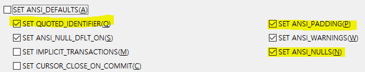
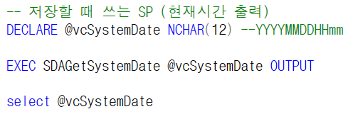
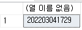
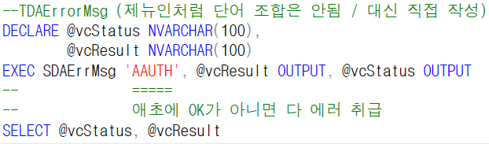
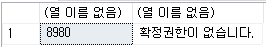
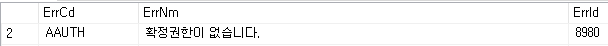

SP
- ANSI 설정 (Ace와 다름)
-
(옵션 - 쿼리 실행 - SQL Server - ANSI)
-
Q,P,N을 꼭 빼줘야함 (SQL 버전도 옛날 버전일 확률이 높기 때문)
ANSI_NULL
=> NULL 이 조회되면 에러가 난다
=> 체크해 놓으면 NULL이 발생하는 데이터에 대해서 무시
==> N은 체크 해야함
- +. 바로 적용되는게 아니라 새로 연 창부터 적용

저장 => Ace는 테이블 단위로 저장해서 1번만 실행하면 되지만
GNI는 행 개수만큼 실행한다
삭제 => 키 값만 넣어서 삭제하면 된다
저장할 때 쓰는 SP
DECLARE @vcSystemDate NCHAR(12) --YYYYMMDDHHmm
EXEC SDAGetSystemDate @vcSystemDate OUTPUT
select @vcSystemDate


스플리트하는 SP에서 금액은 'N'을 붙여줘야 에러가 안나고 0이 나온다
금액은 0이 넘어와도 N'0'으로 넘어와야함
- 에러 표시
-TDAErrorMsg (제뉴인처럼 단어 조합은 안됨 / 대신 직접 작성)
DECLARE @vcStatus NVARCHAR(100),
@vcResult NVARCHAR(100)
EXEC SDAErrMsg 'AAUTH', @vcResult OUTPUT, @vcStatus OUTPUT
-- =====
-- 애초에 OK가 아니면 다 에러 취급
SELECT @vcStatus, @vcResult


TDAErrorMsg
